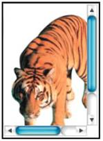
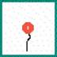

Checkpoint 1.1
Provide an equivalent text for every non-text element (e.g., via "alt", "longdesc", or in element content). This includes: images, graphical representations of text (including symbols), image map regions, animations (e.g., animated GIFs), applets and programmatic objects, ascii art, frames, scripts, images used as list bullets, spacers, graphical buttons, sounds (played with or without user interaction), stand-alone audio files, audio tracks of video, and video.
a) A textual equivalent for images and graphic bottons
Example 1:
This is a picture of a yellow car and its code can be :
<img src=”car.jpg” alt=”Picture of a yellow car .” />
For a simple image, ornamental or occasional, do only a brief description.
If the image is also a link, describe the destination or the propose of the link – and NOT the image. In this case, the draw of the house is a bottom that constitutes a link, that links to the main page. Because of this, the code can be the followed:
<a href=”car.htm”>
<img src=”car.jpg” alt=”Link to the home page.” /> </a>
Example 2:
If the contained information in the image is important to understanding the page (in other words, a part of the informative content can be lost, if the image is removed). The LONGDESC attribute was created to the situations where the desciption to be done must be longer than the allowed by the ALT attribute.
<img src=”alaska_mountains.jpg” longdesc=”mountains.htm” alt=”Picture of mountains in the Alaska.” />
The future brwosers or user agents will have available an optional link to the file that contains the description, named “mountains.htm”.
Example 3:
If you use the OBJECT element to position an image, include the alternative text inside the content of the OBJECT element, for example:
<object data=”wheat.jpg” type=”image/jpg” height=”100” width=”100”>
Put here the short or long description (or a link to a file that contains a long description).
</object>
Observation: The OBJECT element is not yet a image standad. It only works on the Mozilla web browser (Mozilla, Firefox and Netscape) and the Opera. Check the examples below to see how it works on the web browsers.

OBJECT on the Internet Explorer

OBJECT on the Netscape
b) A textual equivalent to the graphical text representations (including symbols)
To the simply text bit maps images (because the objective is to use types of special letters or other type of hard or impossible transformation to be done with cascading style sheet), provide the respective equivalent text. For example:

<img src=”MAG.gif” alt=”MAG Innovision” />
If there is a notation language to the symbols, as MathML, use it instead of a simple textual equivalent. For more detailed information, see the 3.1 checklist.
c) A textual equivalent to the image map regions
To users that use non-graphical web browsers or someone that doesn't use a traditional device (mouse or touch-screen), a page that has image maps as the only way to access the information can be very inaccessible. There are a couple of available techniques that allow to assure that your map can be accessible. All these techniques involve the supply of a textual equivalant to the existing critical functionalities in the image map: name the active areas that represent links to the other information.
Further information on the 1.2 and 1.5 checkpoints.
d) A textual equivalent for animations (as animated GIFs)
 |
<img src=”ani-bal.gif” alt=”Animação de um balão enchendo até arrebentar.” /> |
For example:
e) A textual equivalent for APPLETS and programmable objects
The APPLET element is deprecated in the HTML 4.0. language (In substitution, start to use the new element OBJECT). However, it keeps been used frequently. If you are modifying an APPLET to make it more accessible, use the ALT attribute to a brief description of its action or purpose. In case you want to help the users to understand the purpose of the APPLET, include a more detailed description to the APPLET element content (for example, between the expressions <APPLET> and </APPLET>).
The follwed code will be produced independently of version or capacity of your web browser to show it.
<applet code=”Blink.class” width=”500” height=”40” alt=”Applet Java: dancing text.”>
If you are using a JAVA supported web browser, you could see the text “To be or not to be, that is the question.
Or would be the question to be or not to be ...”, floating along the screen, instead of this paragraph.
</applet>
f) A textual equivalent for ASCII art.
Example 1:
To the explanatory report of the production process, we created two graphic, in which the existing relation can be visualized between costs and time. The ASCII graphic has more meanning to the users that have screen readers, mostly to who uses Braille line. The second graphic shows the same information, in a bitmap image created from a simple draw program. Although this last image is inaccessible to users with screen readers, we can, whoever, add a textual equivalent by using the ALT or LONGDESC attribute.
Bitmap graphic
|
Art-ASCII
C 40-| o
u 30-| o o
s 20-| o o
t 20-| o
o ------------
' ' ' '
1 2 3 4
Time

Example 2:
If the ASCII art image has no relevant information, use a simple description.
The follwed image, made by ASCII art, is of the silhouette of a person with a hat. (Jump ASCII art)
Silhouette of a person with a hat, made by ASCII characters.
<a href="#jump"> </a>
MMMMMMMM
WWWWW WWWWW
******************
| \O/ \O/ |
| | |
\ /
\ --- /
VVVVV
VVV
<a name="jump"> </a>
Note that the link allows to the user with a screen reader jump the ASCII and get to the subtitle.
g) A textual equivalent for frames
Use the TITTLE, and if necessary, the LONGDESC attribute in the FRAME element to describe more details about the frame or its relations with other frames. More information on the 12.2 and 6.5 checkpoints.
Example
<frame src="main.html" longdesc="description.html" title="Mainly content frame">
h) A textual equivalent for scripts
Use the NOSCRIPT element to describe the action or replace the functionality of any script that integrates that page
For example, if you write a SCRIPT that produces some animation showing a new panel everytime the user clicks on a screen region or press a key, use te NOSCRIPT element to supply a textual alternative that describes the whole action. For example:
<script type=”text/javascript”>
... script to show and replace the panles according to the selection of the user...
</script>
<noscript>
In the first panel, Lucy holds a football ball. In the second panel, Charlie Brown is watching the football. And so forth...”
</noscript>
i) A textual equivalent to images used to replace the "bullets" of the lists
Here is a unordered list that uses graphics to replace the "bullets" created by the <UL> element :
The example, in code, shows three different ways, more appropriated, to use the ALT attribute as subtitle for the markers.
<img src=”blueball.gif” alt=”Item: “ /> Pencial <br /> <img src=”blueball.gif” alt=”* “ /> Telephone <br /> <img src=”blueball.gif” alt=” “ /> Calendar <br />
j) A textual equivalent to the images used as spacers
The creation of a transparent image file is a layout trick used by many authors. This will put blank spaces between objects, specifying the height and width, or the HSPACE and VSPACE attributes of IMG element. The textual equivalent appropriated for a spacer is simply nothing, in other words, a blank space. So that:
<img src=”spacer.gif” hspace="100" vspace="10" alt=” “ />
or
<img src=”spacer.gif” width="5" height="200" alt=” “ />
Note that exists a blank space between quotes in the ALT attribute. We prefer, of course, that you use CSS to define your layout.
k) A textual equivalent for sounds (played with or without user iteration ).
You produced a script that causes a sound warning to be played if the visitor of your page try to send a form before the necessary fields are performed.
Your program must have the capacity to write a message on the screen saying something like:
“You tryed to submit an incomplete form. Please, perform, required fields.”
l) A textua equivalent for audio and video files
Example 1:
<a href=”work-e.wav”>
<img src=”audio.gif” alt=”Sound file: Come and join us. “ />
Listen to the sound message left by the author. </a>
Example 2:
Insert subtitles to every audio or video media existing in your web site.
Description:
A title: “On-air Science and Math Fair. Math is Everywhere.”
Caption:
Man: Go long, way out.
Description:
A man throws a football.
Caption:
Professor: Submitted for your consideration: the ball has been thrown, and you want to
catch it. But how do you know where it will go so you can be there when it comes down?
One way is to use this formula.
Description:
The professor scribbles numbers on a blackboard.
Caption:
It factors in velocity, acceleration and time to calculate the distance the ball will go. But then, you knew that. Your brain estimates all of these values in the first seconds of the ball’s fight to calculate where you have to go to catch the ball.
Description:
A beach ball bounces off his head. He tries to catch it.
Caption:
This math equation helps us understand the physical world and how we function in it. Whether you do it on the board or on the field, they both work. So, next time you go out for that long pass, remember: Math is everywhere.
Math is everywhere!
Description:
A title: “Math is Everywhere.”